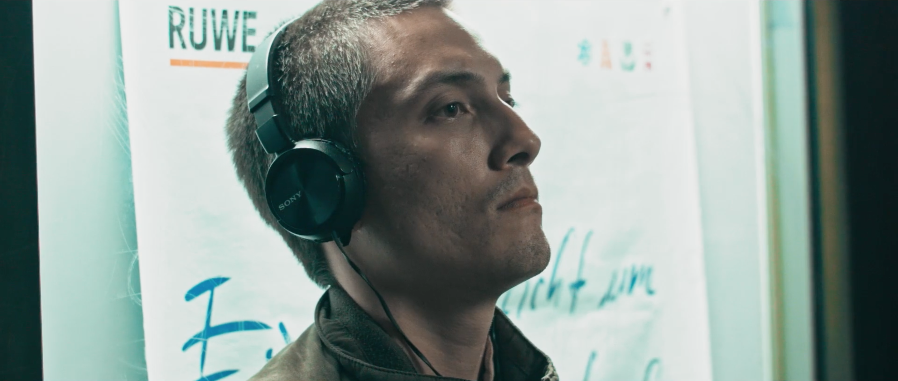

Fiction Short Films Showreel
2017 Lisbon - 2020 Berlin
Underwater
Cast
Crew
Producer, Screenwriter and Director - Guilherme Caeiro
Assistant Director and Color Grader - Paride Ambrogi
Director of Photography - Joseph Wernicke
1st AC - Kilian Maraz
2nd AC - Max Bertani
Sound Director - Ines Nogueira
Continuity Supervisor and Editor - Carolina Cardoso
Art Direction - Production Management - Julieta Aráoz
Poetry of The Closing Time
Cast
Crew
Producer, Screenwriter, Director and Editor - Guilherme Caeiro
Director of Photography and Color Grader - Joris Dragoman
Sound Director - MyGeek
Sound Composer - Estéban Horacio Gimenez
Additional Footage - Sabrina Azevedo
Special Thanks to ACUD Macht Neu
Uma Questão de Fé

Cast
Crew
Co-Director - Guilherme Caeiro
Co-Director - Francismo Mira-Godinho
< >